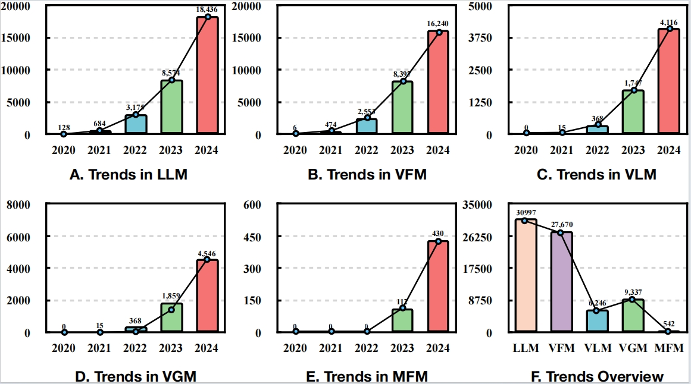

This survey delves into the realm of Parameter-Efficient Fine-Tuning (PEFT) within the context of Foundation Models (FMs). PEFT, a cost-effective fine-tuning technique, minimizes parameters and computational complexity while striving for optimal downstream task performance. FMs, like ChatGPT, DALL-E, and LLaVA specialize in language understanding, generative tasks, and multimodal tasks, trained on diverse datasets spanning text, images, and videos. The diversity of FMs guides various adaptation strategies for PEFT. Therefore, this survey aims to provide a comprehensive survey of PEFT techniques applied to diverse FMs, to address the critical gaps in understanding the techniques, trends, and applications. We start by providing a detailed development of FMs and PEFT. Subsequently, we systematically review the key categories and core mechanisms of PEFT across diverse FMs to offer a comprehensive understanding of trends. We also explore the most recent applications across various FMs to demonstrate the versatility of PEFT, shedding light on the integration of systematic PEFT methods with a range of FMs. Furthermore, we identify potential research and development directions for improving PEFTs in the future. This survey provides a valuable resource for both novice and experienced researchers seeking to understand and use the power of PEFT across FMs.

Figure 1: An overview of trends in PEFT methods in various FMs (LLM, VFM, VLM, MFM, and VGM). The number of citations from Semantic Scholar serves as a trend indicator.
Some examples in SciBench that have been solved accurately with SciGLM (32B). They show that after instruction-tuning, the SciGLM learns skills/behaviors to first analyze the knowledge required for each problem, and then step-by-step solve the problem with correct formula and calculations.
Quantum Chemistry problem
Statistics problem
Quantum Chemistry problem
Statistics problem
Statistics problem
Figure 2: The pipeline of constructing SciInstruct. On the far left is a mix of training datasets. The purpose of the annotation is to supplement chain-of-thought processes with reflective generation. The goal of the filter is to train an instruction-quality classifier and only keep high-quality reasoning traces as instructions.
Figure 3: Domain and question type proportions of SciInstruct.
Math
Physics
Chemistry
Formal Proofs (Lean)
If you find our work helpful, please kindly cite our paper:
@article{zhang2024sciglm,
title={Sciglm: Training scientific language models with self-reflective instruction annotation and tuning},
author={Zhang, Dan and Hu, Ziniu and Zhoubian, Sining and Du, Zhengxiao and Yang, Kaiyu and Wang, Zihan and Yue, Yisong and Dong, Yuxiao and Tang, Jie},
journal={arXiv preprint arXiv:2401.07950},
year={2024}
}